Logopedista
Branding e campagneUn biglietto da visita per una logopedista dell’età evolutiva, costruito con i disegni dei bambini in cura: il loro tratto diventa l’identità e il claim “Comunicare è vivere” racconta il senso del suo lavoro.
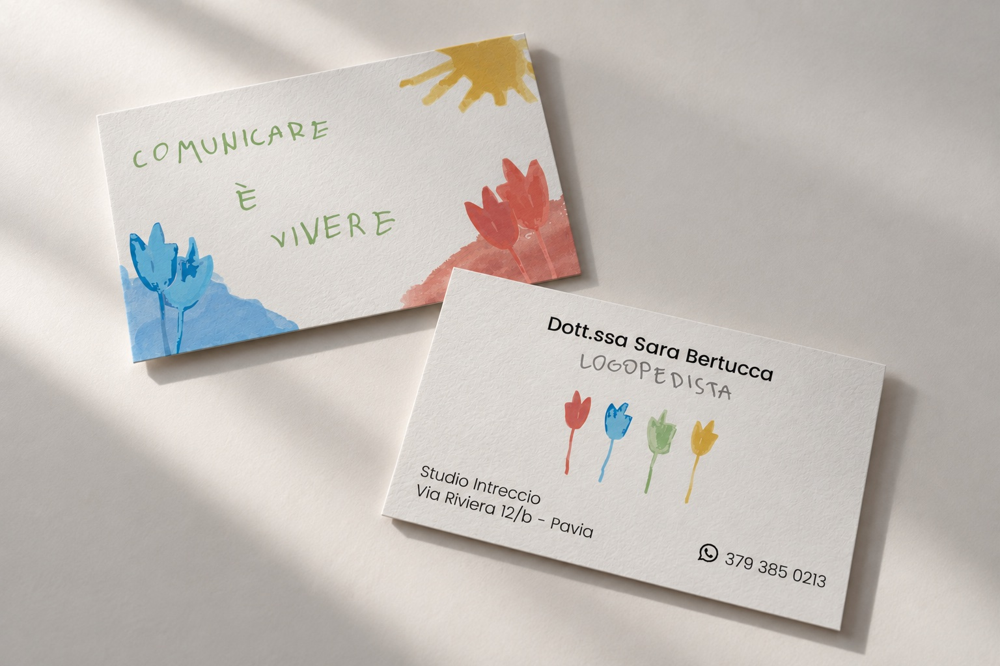
Il concept
I disegni li hanno fatti i bambini in cura nello studio. Li ho digitalizzati e vettorializzati e ne ho fatto l’elemento grafico centrale del biglietto. Il claim “Comunicare è vivere” riassume il lavoro della dottoressa: la comunicazione è lo strumento con cui il bambino entra in relazione con il mondo.
La costruzione del biglietto
Fronte e retro sono fatti con gli stessi elementi: i tulipani e il sole dei disegni dei bambini e la scritta a mano. Sul fronte le macchie di colore, i tulipani e il sole fanno da cornice al claim. Sul retro i tulipani si mettono in fila e lasciano spazio al nome e ai contatti.
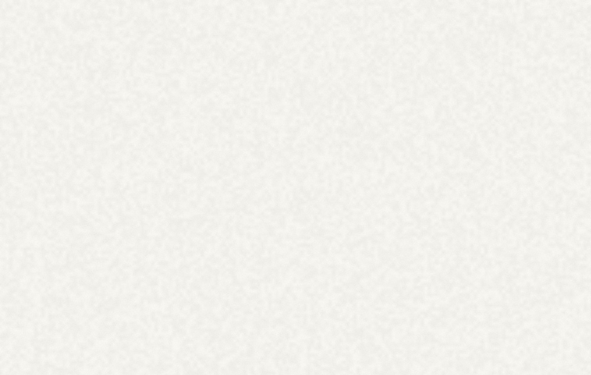
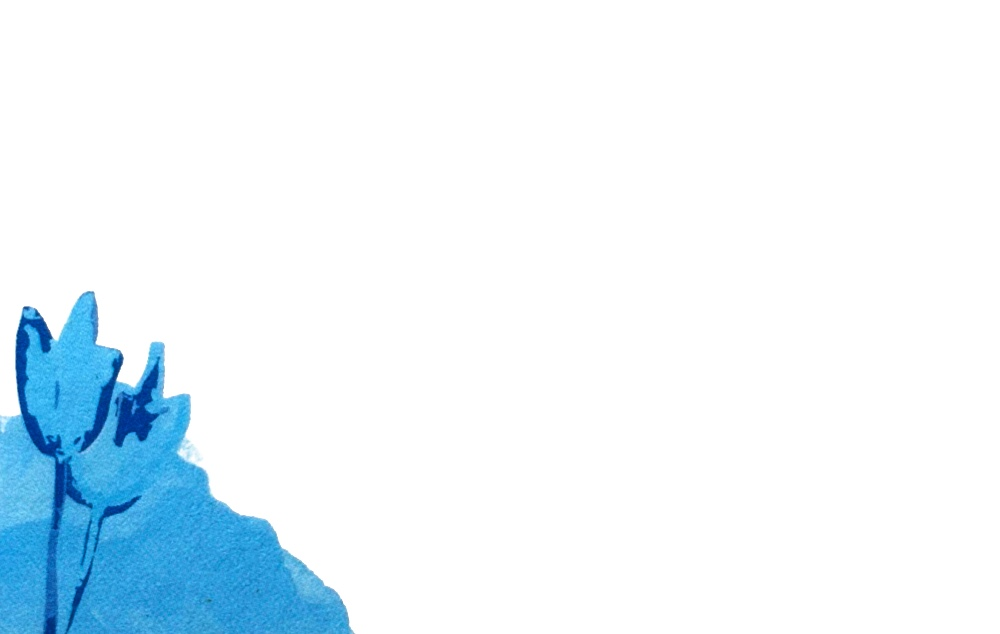
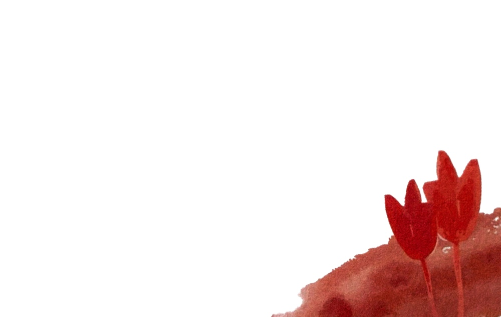
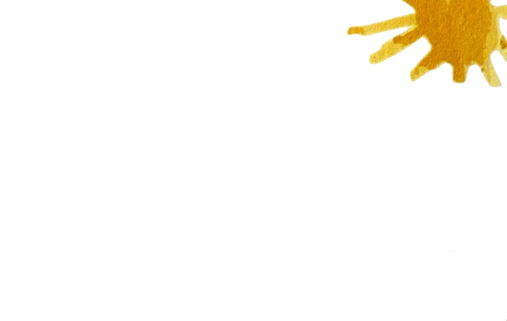
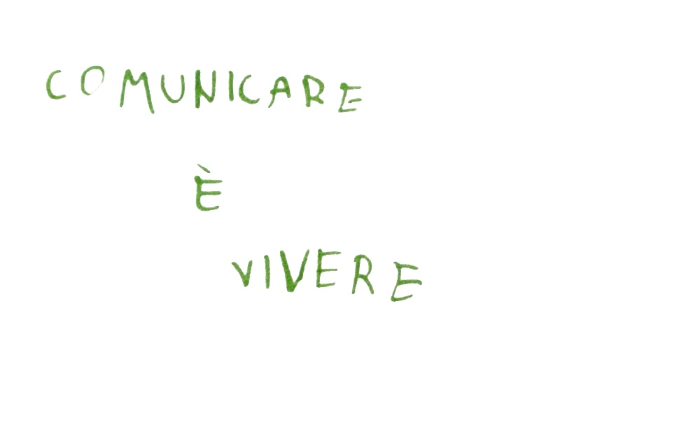
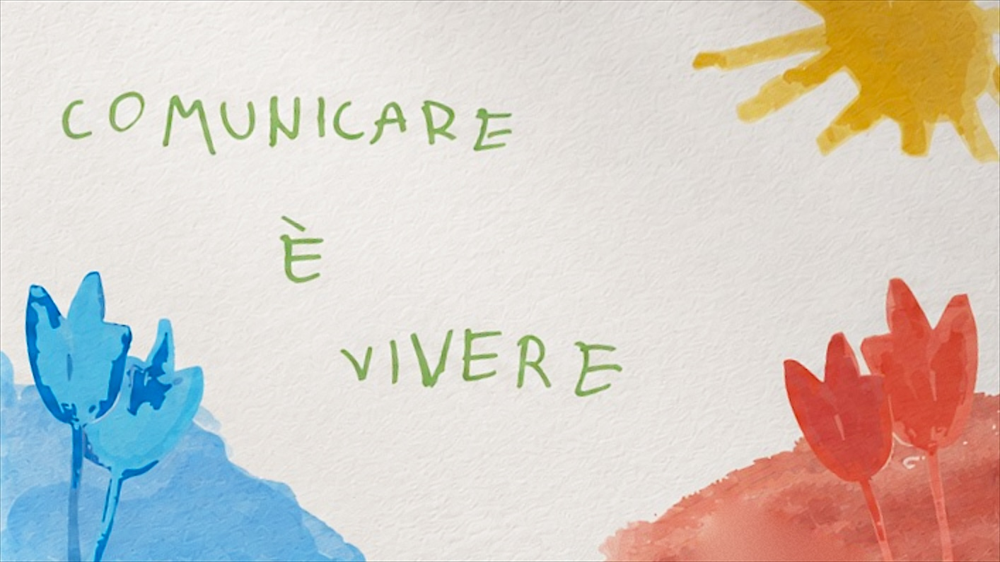
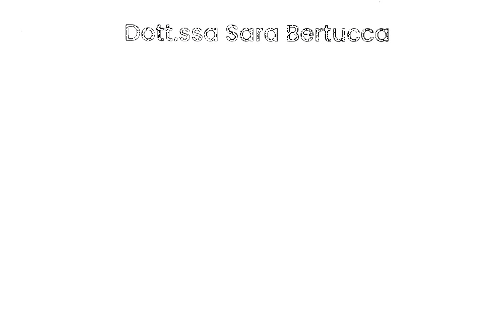
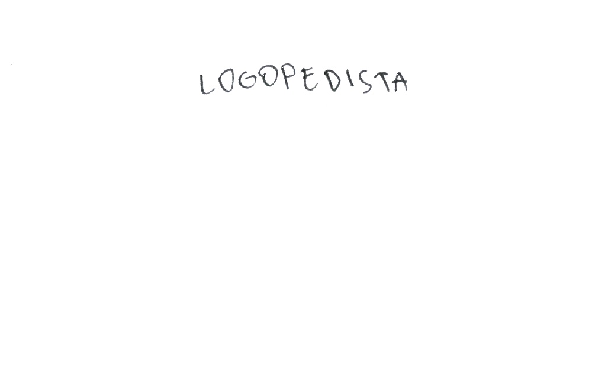
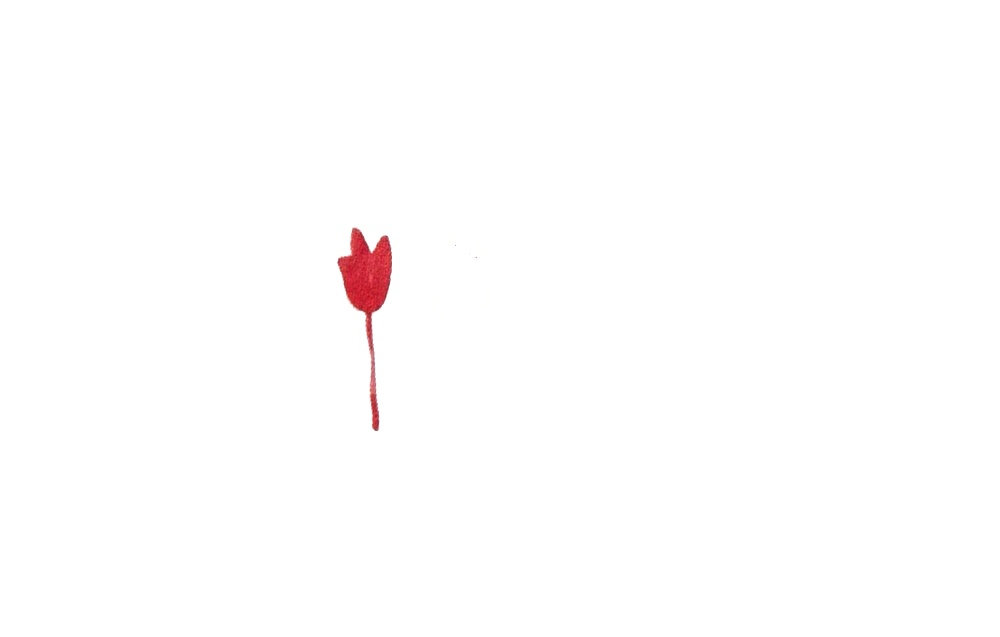
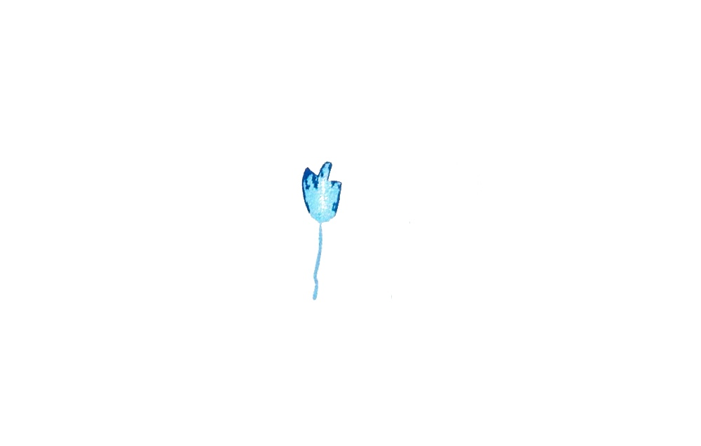
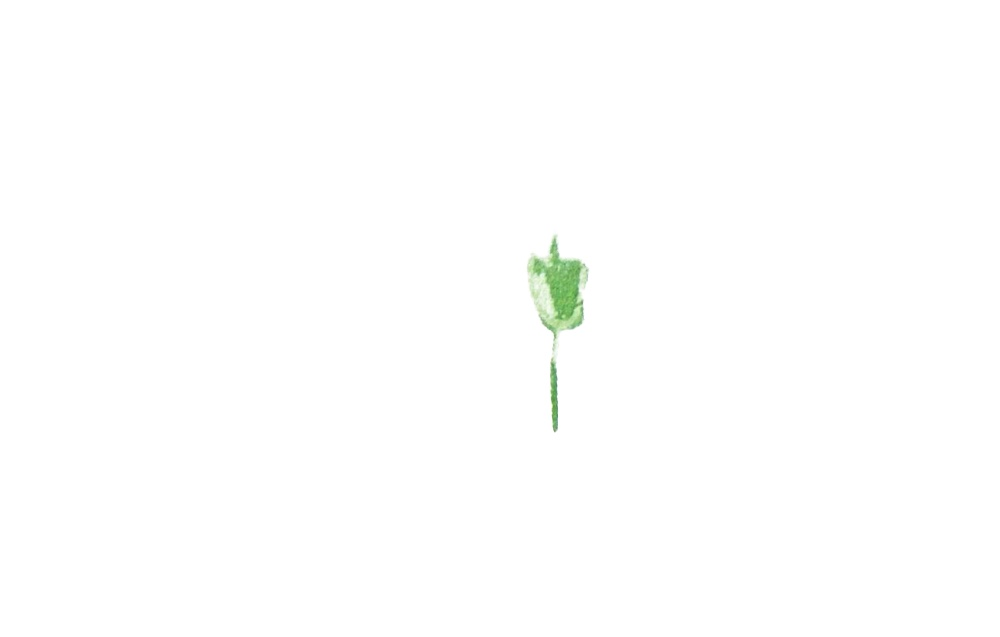
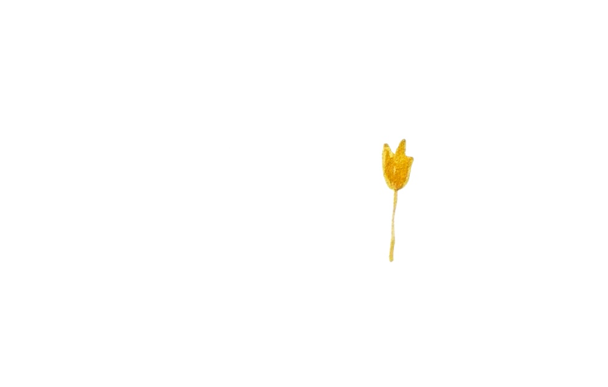
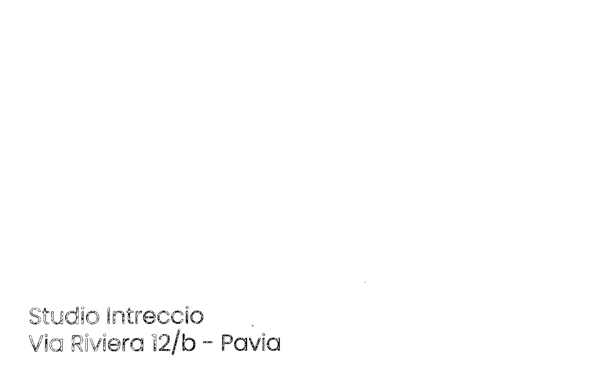
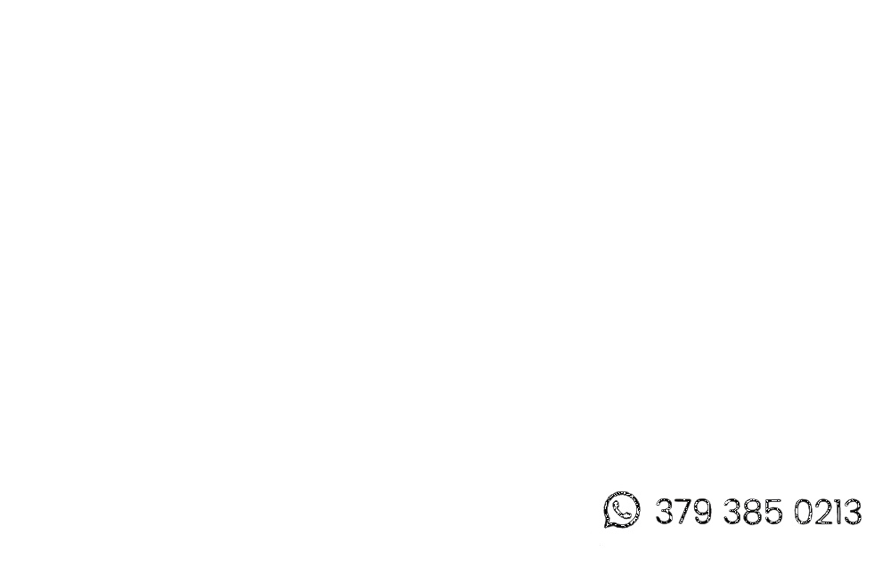
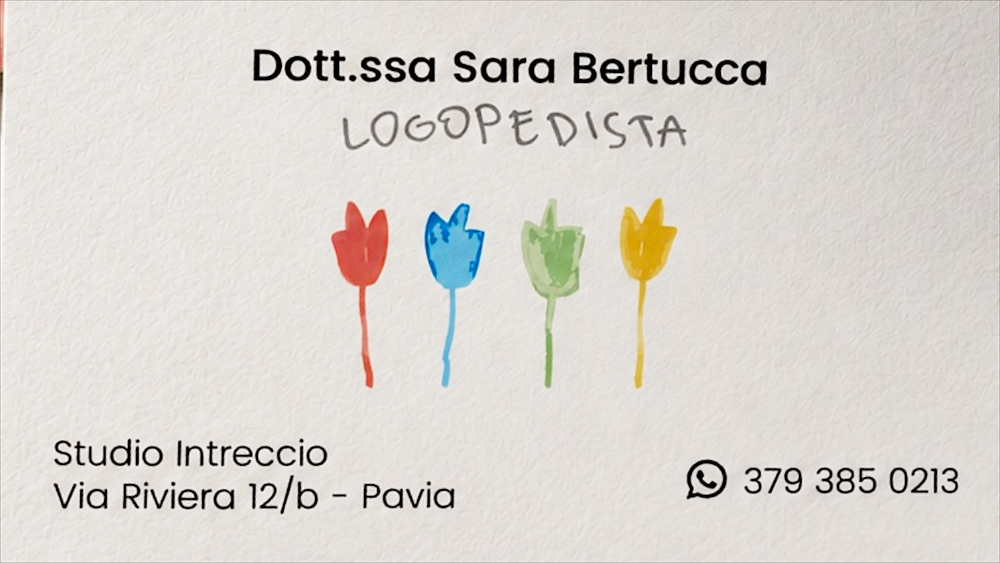
Colore e stampa
Ho costruito una palette di sfumature giocose e colorate, vicine al mondo dei bambini, e l’ho ripresa sul retro per dare continuità al biglietto.
L’ho stampato su carta riciclata. I biglietti sono già in circolazione.
La palette
- #EAC26A
- #DE766E
- #95D5F1
- #3FA535